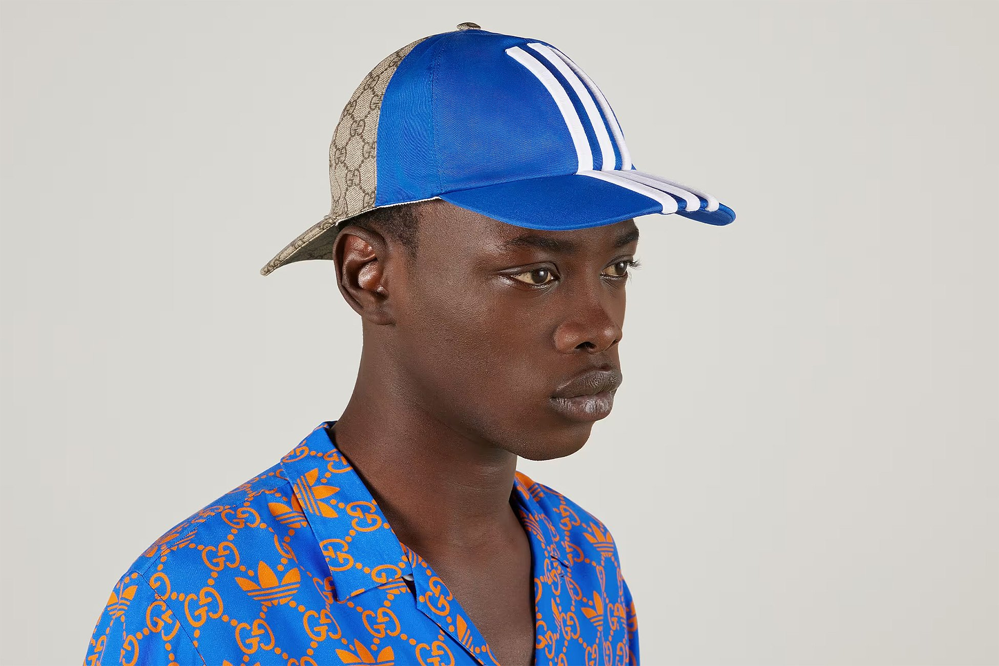
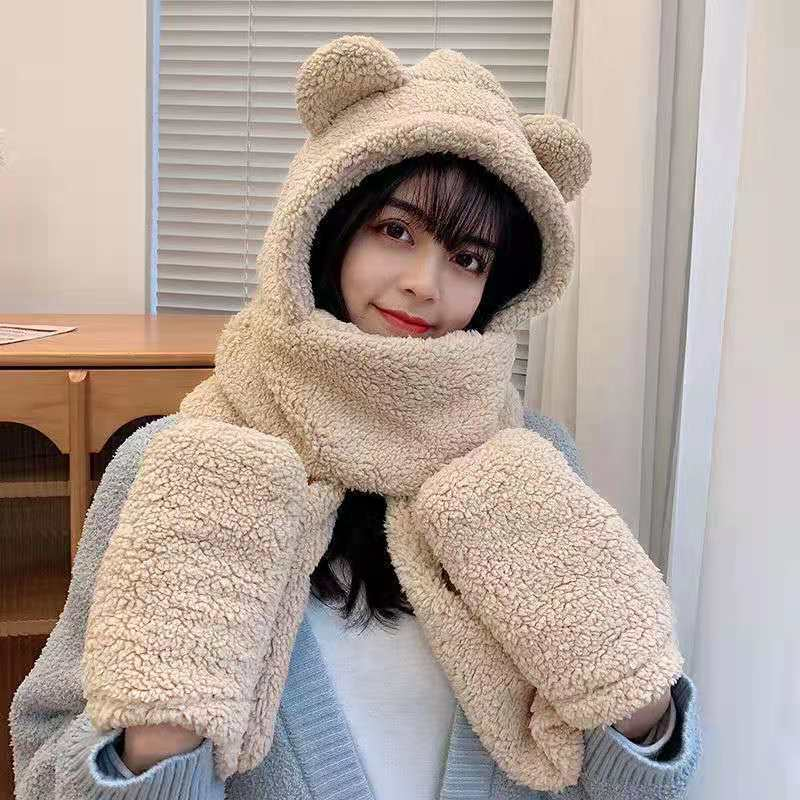
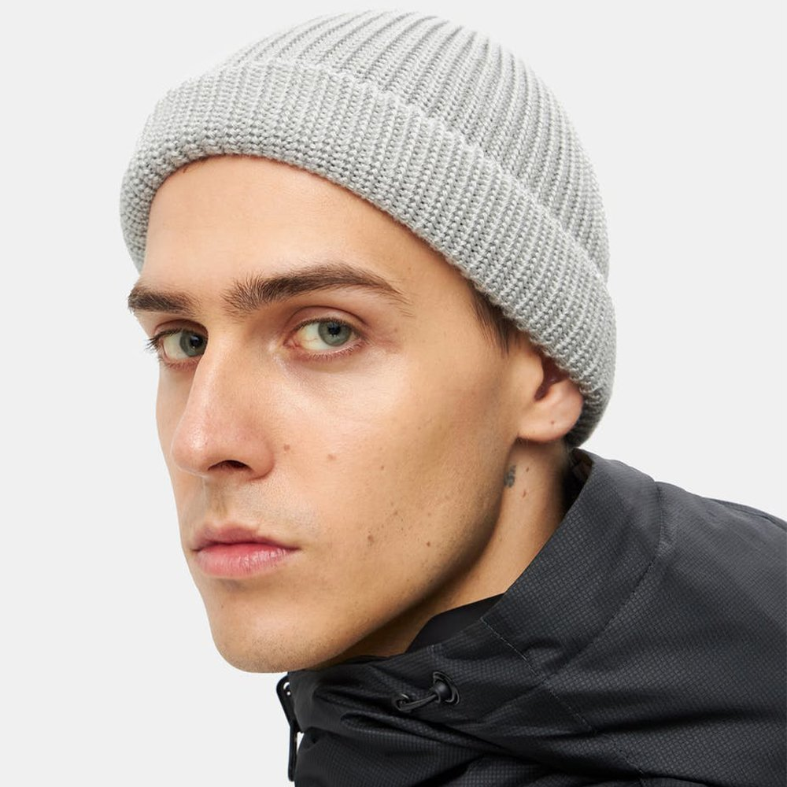

{% extends "base.html" %}

{% block pagename %}Головные уборы Abibas{% endblock %}

{% block main %}
<style>
	.img-line {
<!--		border: 2px solid #55c5e9; /* Рамка вокруг фотографии */-->
		padding: 15px; /* Расстояние от картинки до рамки */
		margin-right: 10px; /* Отступ справа */
		margin-bottom: 10px; /* Отступ снизу */
    }
	</style>

<h3>Головные уборы</h3>
        <ul>
            <li><a> <h3> Панамы</h3></a></li>
            <li><a><h3> Бейсболки</h3></a></li>
			<li><a><h3> Шапки</h3></a></li>
        </ul>
<p class="img-line">
	
	
	
	
	</p>
{% endblock %}